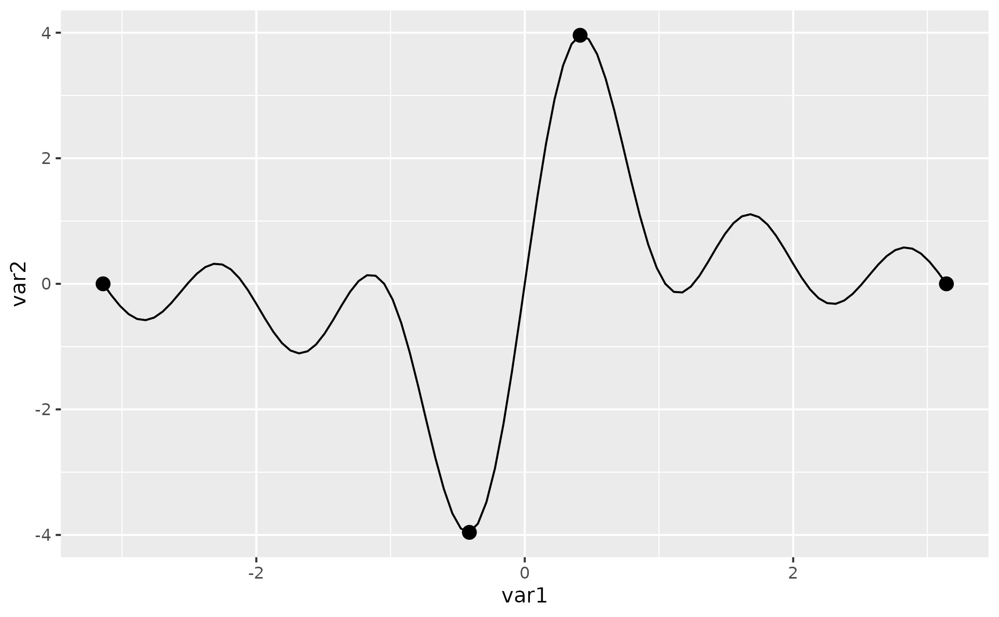

Add some points
The ggpointless package an extension of the ggplot2 plotting library. The goal is to emphasize certain observations with an accent to provide some useful context.
library(ggpointless)
cols <- c('#f4ae1b', '#d77e7b', '#a84dbd', '#311dfc')
x <- seq(-pi, pi, length.out = 100)
y <- outer(x, 1:5, function(x, y) sin(x*y))
df1 <- data.frame(
var1 = x,
var2 = rowSums(y)
)
p <- ggplot(df1, aes(x = var1, y = var2))
p + geom_pointless() + labs(subtitle = "default")
p + geom_pointless(location = "all") + labs(subtitle = "location = 'all'")

As you can see, geom_pointless() is not terribly useful on its own (and here I stuck thinking about a better package name) but when it teams up with geom_line() and friends, hopefully.
p <- p + geom_line()geom_pointless() understands the same arguments as geom_point() and one additional argument location. You can set it to "first", "last" (default), "minimum", "maximum", and "all", where "all" is just shorthand to select "first", "last", "minimum" and "maximum".
p + geom_pointless(location = "all",
size = 3)
You can use the one additionally computed variable location and map it to an aesthetic, e.g. color.
p + geom_pointless(aes(color = after_stat(location)),
location = "all",
size = 3) +
scale_color_manual(values = cols) +
theme(legend.position = "bottom")
Order and orientation
The locations are determined in the order in which they appear in the data – like geom_path() does compared to geom_line(). This can be seen in the next example, with data kindly taken from the geomtextpath package:
x <- seq(5, -1, length.out = 1000) * pi
spiral <- data.frame(var1 = sin(x) * 1:1000,
var2 = cos(x) * 1:1000)
p <- ggplot(spiral) +
geom_path() +
coord_equal(xlim = c(-1000, 1000), ylim = c(-1000, 1000)) +
scale_color_manual(values = cols) +
theme(legend.position = "none")
p + aes(x = var1, y = var2) +
geom_pointless(aes(color = after_stat(location)),
location = "all",
size = 3) +
labs(subtitle = "orientation = 'x'")
p + aes(y = var1, x = var2) +
geom_pointless(aes(color = after_stat(location)),
location = "all",
size = 3) +
labs(subtitle = "orientation = 'y'")
As you see from the last examples "first" and "minimum" overlap, and "first" wins over "minimum". The order in which points are plotted (if specified together) from top to bottom is: "first" > "last" > "minimum" > "maximum".
Data
The ggpointless package contains two data sets:
-
co2_ml: CO2 records taken at Mauna Loa -
covid_vac: COVID-19 Cases and Deaths by Vaccination Status